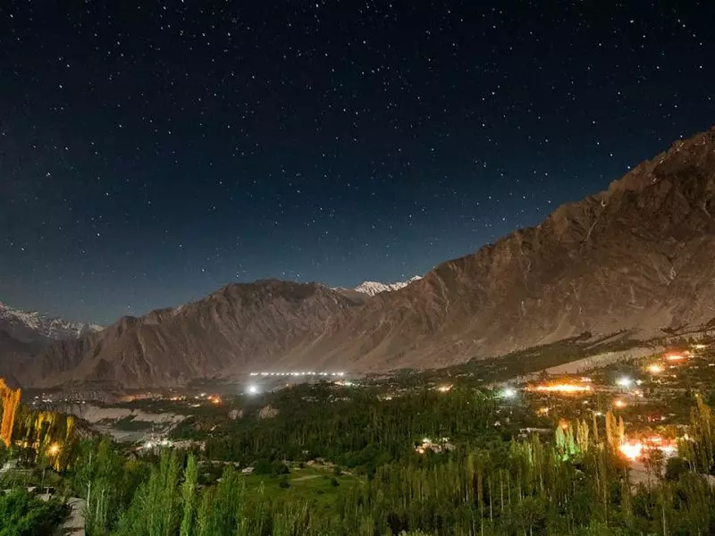

Hunza Valley is located in Gilgit-Baltistan, Pakistan. It is a mountainous valley with beautiful tourist spots to visit. It is in the Northern Part of Gilgit-Baltistan, Pakistan, bordering with China. It has an elevation of 2,438. In the past, Hunza was a princely state bordering the autonomous region Xinjiang of China and with Pamir. Zulfikar Ali Bhutto dissolved it in 1974. There are some local languages spoken in Hunza that include Wakhi, Shina, and Burushaski. The people of Hunza are very educated, and their literacy rate is more than 95%.
.webp)
Hunza Valley is enriched with the natural beauty. Lakes, rivers, waterfalls, and mountains are in abundance. A huge number of local and foreign tourists visit to see the hidden gems of Hunza Valley. One who visits the Hunza Valley witnesses the stunning and captivating views of this place. The mountains of Karakoram, curvy roads along the Hunza River, and the lakes give a sense of joy and refreshes one’s mind and body.
.webp)
The climate of Hunza is mild. The best time to visit this heavenly place is in the summer when the temperature here is not more than 27℃. Hunza Valley is full of tourist attraction places. The best places to visit are Rakaposhi Peak, Karimabad, Altit and Baltit Fort, The Queen Victoria Monument, Sost Border, Gulmit, Borith Lake, Eagle Nest, and much more. Attabad Lake and Rush Lake are the two places where tourists love to spend their time. Attabad lake is the most fascinating point in Hunza Valley. It came into existence due to a disaster. Now, it is the most visited tourist spot. The lake is 13 miles long and 358 feet deep. Tourists enjoy boating, fishing, and jet ski at Attabad Lake. This lake is considered to be one of the best lakes in Pakistan.
Another gem of Hunza Valley is Rush Lake. The Rush lake is in the Nagar Valley of Hunza Valley. In Nagar Valley, nothing is more beautiful than this lake.